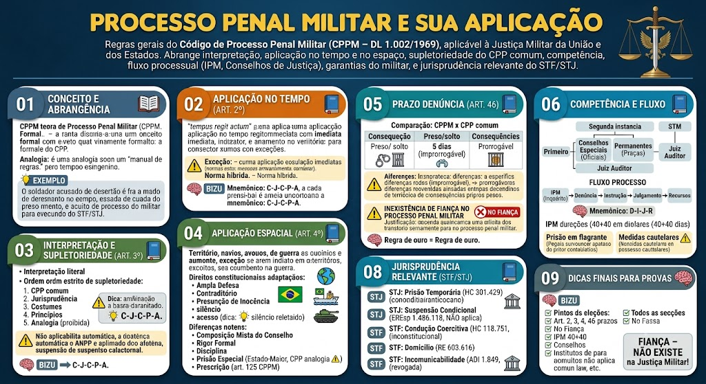

O que é o CPPM?
O que é o CPPM?
O Código de Processo Penal Militar (Decreto-Lei nº 1.002/1969) é o conjunto de regras que disciplina a investigação, o processo e o julgamento dos crimes militares. Aplica-se à Justiça Militar da União (para crimes cometidos por militares das Forças Armadas) e às Justiças Militares Estaduais (para crimes cometidos por policiais militares e bombeiros militares).
Natureza: é um código formalista, rigoroso e hierarquizado, refletindo os princípios da disciplina e da hierarquia castrense.
📖 Analogia: Pense no CPPM como o “manual de regras” da Justiça Militar – cada procedimento tem sua forma específica, e a obediência às regras é tão importante quanto o mérito.
Situação prática
Situação prática
Um soldado é acusado de deserção (crime militar). Ele não será julgado pela Justiça Comum, mas sim por um Conselho de Justiça Militar, com regras próprias de citação, instrução e recursos, previstas no CPPM.
Regra geral: tempus regit actum
Regra geral: tempus regit actum
Art. 2º, caput: 'A lei processual penal militar aplica-se imediatamente, sem prejuízo da validade dos atos processuais já praticados.'
Princípio: a lei processual nova alcança os processos em andamento, mas preserva os atos já realizados (isolamento dos atos processuais). Não há direito adquirido a procedimento antigo.
⚠️ Exceção (Art. 2º, parágrafo único)
⚠️ Exceção (Art. 2º, parágrafo único)
A lei processual nova não prejudicará os prazos já iniciados nem os atos já praticados sob a vigência da lei anterior.
Exemplo: Se a lei nova reduz o prazo para defesa, mas o prazo já havia começado a correr, aplica-se o prazo antigo.
Pegadinha: Se a lei processual nova também tiver conteúdo material benéfico (norma híbrida ou mista), deve-se observar a retroatividade da norma penal benéfica (art. 5º, XL, CF) – aplicando-se a parte mais favorável ao réu, mesmo que processual.
Mnemônico
Mnemônico
📌 “Novo processo = imediato; atos e prazos já feitos ficam como estão.”
📌 “Se for mista (processo + material benéfico), favorece o réu.”
Regra de interpretação
Regra de interpretação
Art. 3º: 'A lei processual penal militar será interpretada literalmente, sem se admitir extensão, analogia ou interpretação extensiva para criar hipóteses de incriminação ou agravar a situação do acusado.'
Interpretação literal: dá-se às palavras o sentido comum, salvo se a lei expressamente quiser dizer outra coisa.
Ordem de supletoriedade (preenchimento de lacunas)
Ordem de supletoriedade (preenchimento de lacunas)
Na falta de disposição expressa no CPPM, aplicam-se, sucessivamente:
1. Código de Processo Penal comum (CPP – DL 3.841/41) – subsidiariamente;
2. Jurisprudência militar e comum;
3. Costumes militares (usos e práticas da caserna);
4. Princípios gerais do Direito;
5. Analogia – vedada para criar crimes ou agravar penas (art. 3º, in fine).
⚠️ Atenção: a aplicação subsidiária do CPP comum é restrita. Nem todos os institutos modernos (ex.: suspensão condicional do processo, acordo de não persecução penal) são automaticamente recepcionados pela Justiça Militar, devido à rigidez do rito castrense.
Institutos do CPP comum não aplicáveis automaticamente
Institutos do CPP comum não aplicáveis automaticamente
O STF e o STJ já firmaram entendimento de que certos institutos do processo penal comum (como a suspensão condicional do processo – art. 89 da Lei 9.099/95, e o acordo de não persecução penal – ANPP) não são automaticamente aplicáveis no processo penal militar, por ausência de previsão expressa e pela incompatibilidade com os princípios da hierarquia e disciplina.
Exceção: quando a lei militar expressamente autorizar ou houver norma específica estadual (para PMs) que permita, pode-se discutir a aplicação, mas a tendência é restritiva.
Ordem de preenchimento
Ordem de preenchimento
🧠 “C-J-C-P-A” – CPP, Jurisprudência, Costumes, Princípios, Analogia (proibida para criar crimes).
Território nacional e além
Território nacional e além
Art. 4º: 'A lei processual penal militar aplica-se em todo o território nacional e fora dele, nos casos previstos em tratado ou em lei, quando a infração for cometida em navios ou aeronaves militares, ou em missões oficiais.'
Regras:
- Em tempo de paz: aplica-se apenas no território nacional (incluindo mar territorial e espaço aéreo) e em embarcações/ aeronaves militares brasileiras onde quer que estejam.
- Em tempo de guerra: a aplicação se estende a áreas de operações, zonas de combate e territórios ocupados, conforme as convenções internacionais.
💡 Exemplo: Um militar brasileiro comete crime em uma base militar no exterior, em território estrangeiro – aplica-se o CPPM, pois a infração ocorreu em missão oficial.
Pegadinha
Pegadinha
❌ 'O CPPM só se aplica dentro do Brasil.' → ERRADO. Aplica-se também fora, em navios/aeronaves militares e em missões oficiais.
❌ 'Em tempo de guerra, o CPPM não se aplica.' → ERRADO. Aplica-se com alcance ampliado, conforme o art. 4º, parágrafo único.
Prazos do CPPM – DIFERENÇA CRUCIAL
Prazos do CPPM – DIFERENÇA CRUCIAL
O CPPM estabelece prazos específicos para o oferecimento da denúncia, que diferem do CPP comum em termos de contagem e consequências.
Art. 46, alínea 'a': Se o indiciado estiver preso, o prazo para denúncia é de 5 (cinco) dias a contar do recebimento dos autos do IPM.
- Natureza: é um prazo rigoroso, pois o réu está custodiado.
- Consequência do descumprimento: o juiz pode relaxar a prisão ou o MP perde a prioridade (a vítima pode oferecer queixa subsidiária).
Art. 46, alínea 'b': Se o indiciado estiver solto, o prazo para denúncia é de 15 (quinze) dias a contar do recebimento dos autos do IPM.
- Prorrogação: o prazo pode ser prorrogado por igual período, mediante despacho fundamentado do juiz, se houver necessidade de diligências imprescindíveis.
⚠️ Diferença crucial: CPPM x CPP comum
⚠️ Diferença crucial: CPPM x CPP comum
Embora os números sejam os mesmos (5 dias para preso, 15 para solto), a contagem e as consequências processuais guardam diferenças de rito:
- CPPM (militar): o prazo de 5 dias para preso é improrrogável – se não denunciado, o preso deve ser solto (salvo se já houver prisão preventiva decretada por outro fundamento).
- CPP comum: o prazo também é de 5 dias, mas a consequência do descumprimento não é automática – o juiz pode prorrogar ou aplicar outras medidas.
📌 Pegadinha: A banca pode afirmar que os prazos são idênticos e produzem os mesmos efeitos – ERRADO. A aplicação prática é diferente.
⚠️ Inexistência de fiança no processo penal militar
⚠️ Inexistência de fiança no processo penal militar
Regra de ouro: no processo penal militar NÃO EXISTE FIANÇA (Art. 270 do CPPM). A liberdade provisória é concedida sem qualquer pagamento.
Justificativa: a fiança é uma caução que visa garantir o comparecimento do réu; no âmbito militar, a confiança na honra do militar e a disciplina tornam esse instituto incompatível com a caserna.
📌 Pegadinha: A banca pode afirmar que a liberdade provisória no CPPM depende de fiança – ERRADO. Não existe fiança na Justiça Militar.
Órgãos da Justiça Militar
Órgãos da Justiça Militar
A Justiça Militar (da União e dos Estados) possui a seguinte estrutura:
1. Primeira instância:
- Conselhos de Justiça: órgãos colegiados que julgam os crimes militares. Dividem-se em:
- Conselho Especial de Justiça: para Oficiais (presidido por um Juiz Auditor Togado, composto por oficiais superiores).
- Conselho Permanente de Justiça: para Praças (presidido por um Juiz Auditor Togado, composto por oficiais de patente intermediária).
- Juiz Auditor Togado: juiz de carreira da Justiça Militar, que preside os Conselhos e profere a sentença (embora haja participação dos oficiais no julgamento).
2. Segunda instância:
- Tribunal de Justiça Militar (TJM): órgão colegiado (desembargadores militares e civis) que julga recursos e revisões.
3. Superiores:
- Superior Tribunal Militar (STM): corte nacional de apelação, composta por ministros militares e civis.
⚠️ Importante: No âmbito estadual, a estrutura é similar, com TJM estadual (ex.: TJM de São Paulo, Minas Gerais, etc.) e, em alguns Estados, a Justiça Militar é julgada pelo próprio TJ comum (quando não há TJM).
Fluxo do Processo Penal Militar
Fluxo do Processo Penal Militar
As fases principais são:
1. Inquérito Policial Militar (IPM): procedimento investigatório presidido por um oficial ou pelo Juiz Auditor, com prazo máximo de 40 dias (prorrogável), para reunir provas e indiciar o autor.
2. Oferecimento da denúncia: pelo Ministério Público Militar (MPM), com a indicação dos fatos e das provas.
3. Instrução criminal: audiências, produção de provas, interrogatório, oitiva de testemunhas, debates.
4. Julgamento: pelo Conselho de Justiça competente, que profere a decisão (absolvição ou condenação).
5. Recursos: cabem apelação, embargos, recurso em sentido estrito, etc., para o TJM/STM.
📌 Prazo do IPM: 40 dias, prorrogável por mais 40 (art. 20 do CPPM). Em caso de prisão temporária, o prazo é reduzido.
🧠 Mnemônico: “IPM → Denúncia → Instrução → Julgamento → Recurso” (D-I-J-R).
Prisão em flagrante e medidas cautelares
Prisão em flagrante e medidas cautelares
O militar pode ser preso em flagrante delito por autoridade policial militar (art. 244 do CPPM). A prisão deve ser comunicada ao juiz em 24 horas.
Medidas cautelares previstas: prisão preventiva, prisão temporária (aplicável, com ressalvas), afastamento do cargo, proibição de contato, etc., sempre com fundamentação e proporcionalidade.
⚠️ Pegadinha: A prisão temporária também é cabível no processo penal militar, desde que observados os requisitos da Lei 7.960/89 (como para a União), mas com as particularidades do rito castrense. O STJ já admitiu sua aplicação, mas exige adequação à lei processual militar.
Direitos do militar no processo
Direitos do militar no processo
O militar acusado em processo penal militar goza das mesmas garantias constitucionais do processo penal comum, com algumas adaptações:
- Ampla defesa: direito a advogado (particular ou defensor público militar).
- Contraditório: direito de conhecer a acusação e se manifestar.
- Presunção de inocência: até o trânsito em julgado.
- Assistência do Ministério Público Militar: fiscaliza a lei e atua como órgão acusador.
- Juiz natural: julgamento por órgão previsto em lei, com composição mista (togado e militares).
- Direito ao silêncio: ninguém é obrigado a produzir prova contra si mesmo.
- Acesso aos autos: direito de consultar os autos do IPM e do processo.
💡 Dica: O acusado pode ser interrogado, mas não é obrigado a responder perguntas que o incriminem – o silêncio não pode ser usado contra ele (art. 5º, LXIII, CF).
Diferenças em relação ao processo comum
Diferenças em relação ao processo comum
1. Composição do órgão julgador: presença de oficiais da ativa (conselheiros) ao lado do juiz togado – o que não ocorre no processo comum.
2. Rigor formal: o CPPM é extremamente formalista; prazos e procedimentos devem ser observados com exatidão.
3. Disciplina: o processo pode envolver questões disciplinares (ex.: transgressões) que, embora não sejam crimes, podem influenciar a pena ou a situação funcional.
4. Prisão especial: o militar tem direito a prisão em sala de Estado-Maior ou local especial (art. 295, V, CPP, aplicado por analogia).
5. Prescrição: prazos prescricionais são os mesmos do CP, mas contados de forma específica (art. 125, CPPM).
Entendimentos consolidados
Entendimentos consolidados
Os tribunais superiores já pacificaram importantes teses sobre o processo penal militar:
Pegadinhas e pontos-chave
Pegadinhas e pontos-chave
📌 Art. 2º: lei nova = imediata; atos e prazos já iniciados = não prejudicados.
📌 Art. 3º: interpretação literal; supletoriedade: CPP → jurisprudência → costumes → princípios → analogia (vedada para criar crimes).
📌 Art. 4º: aplicação espacial ampliada para navios/aeronaves militares e guerra.
📌 Art. 46: prazos para denúncia – 5 dias (preso, improrrogável) / 15 dias (solto, prorrogável).
📌 Fiança: NÃO EXISTE no processo penal militar.
📌 IPM: prazo de 40 dias + 40 (prorrogáveis).
📌 Conselhos: Especial (Oficiais) e Permanente (Praças).
📌 Institutos do CPP comum: ANPP e suspensão condicional do processo NÃO se aplicam automaticamente.
📌 Prisão especial: garantida ao militar.
📌 Condução coercitiva: vedada (ADPF 444).
📌 Incomunicabilidade: revogada.
Fiança – NÃO EXISTE na Justiça Militar!
Fiança – NÃO EXISTE na Justiça Militar!
📌 Regra de ouro: a fiança NÃO EXISTE no processo penal militar (Art. 270 do CPPM). O militar não paga para ser solto – a liberdade provisória é concedida ou negada com base em critérios objetivos e subjetivos, nunca mediante caução.
⚠️ Pegadinha: A banca pode afirmar que a liberdade provisória na Justiça Militar depende de fiança – ERRADO.
Mapa-mental – Processo Penal Militar
Material de estudo: Processo Penal Militar e sua aplicação
Material complementar · Ver fonte no GitHub
Prazo para Oferecimento da Denúncia (Art. 46)
Comparação: CPPM x CPP comum
| Critério | CPPM (Militar) | CPP (Comum) |
|---|---|---|
| Réu preso | 5 dias (Art. 46, a) – improrrogável | 5 dias (Art. 46, CPP) – prorrogável em situações excepcionais |
| Réu solto | 15 dias (Art. 46, b) – prorrogável | 15 dias (Art. 46, CPP) – prorrogável |
| Consequência do descumprimento | Relaxamento da prisão; queixa subsidiária | Pode ser prorrogado; não gera relaxamento automático |
Jurisprudência Relevante (STF/STJ)
Entendimentos consolidados
Os tribunais superiores já pacificaram importantes teses sobre o processo penal militar:
- STJ (HC 301.429): A prisão temporária é aplicável no processo penal militar, desde que observados os requisitos da Lei 7.960/89 e os prazos do CPPM.
- STJ (EREsp 1.486.118): A suspensão condicional do processo (art. 89 da Lei 9.099/95) não é aplicável ao processo penal militar, por ausência de previsão legal e incompatibilidade com o rito castrense.
- STF (HC 118.751): A condução coercitiva para interrogatório é inconstitucional, inclusive no âmbito militar (ADPF 444), salvo se houver ordem judicial para condução com fundamento em prisão preventiva ou flagrante.
- STF (RE 603.616): A entrada em domicílio sem mandado, no âmbito militar, só é lícita em flagrante delito, desastre ou socorro, ou com consentimento do morador – a mesma regra do art. 5º, XI, CF.
- STF (ADI 1.849): A incomunicabilidade do preso militar foi revogada (Lei 8.072/90, art. 18), garantindo-se o contato com advogado e familiares.
Dicas Finais para Provas
Mapa-mental – Processo Penal Militar
